Префектура Окинава · Мияко · море и ночная жизнь
Остров Мияко: море «мияко-блю», четыре пляжа и долгая ночь на улице Нэнкин-дори
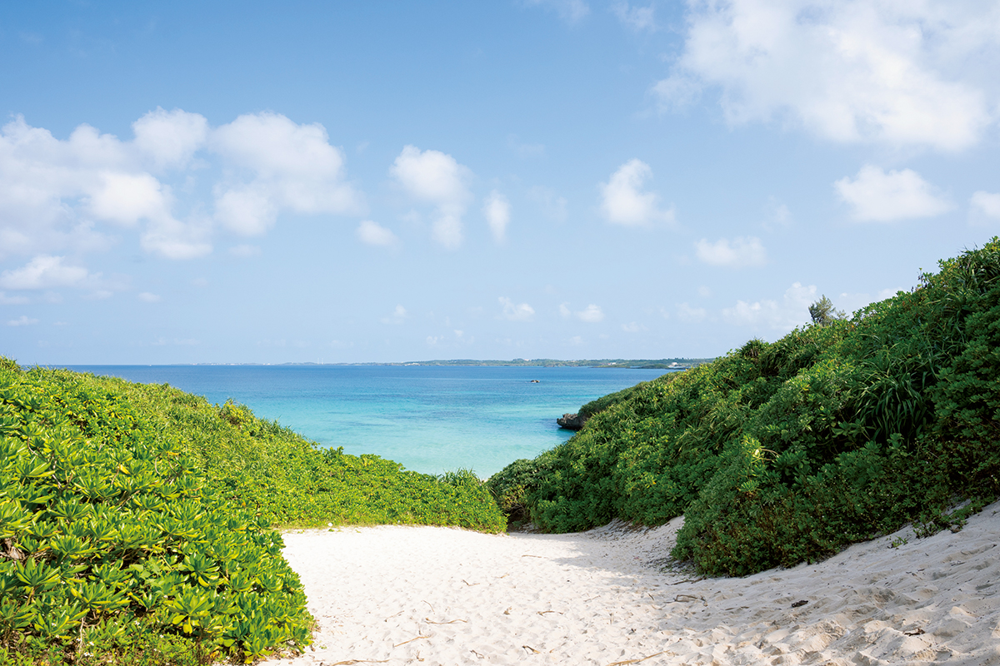
Мияко, самый большой остров одноимённой группы на юге префектуры Окинава, знаменит водой такой прозрачности, что у её цвета есть своё имя: «мияко-блю». Днём здесь ездят от пляжа к пляжу и от моста к мосту, а вечером идут в бары, которые работают до утра.
Остров
Откуда берётся «мияко-блю»
Острова префектуры Окинава разбросаны по огромному морю, их здесь около 160, больших и маленьких. Группа Мияко состоит из восьми обитаемых островов, и Мияко из них самый крупный: около 159 квадратных километров, 103 километра по берегу и почти 50 000 жителей.
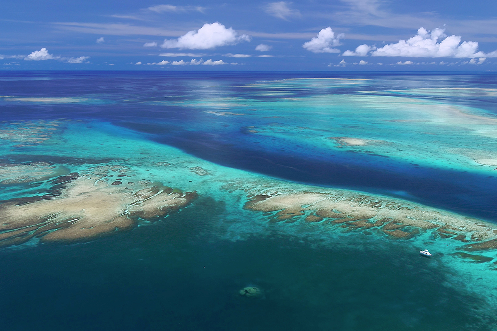
Секрет цвета воды в самом острове. Мияко поднялся из моря как коралловый риф, поэтому он плоский, без высоких гор, а почва легко пропускает влагу. Дождь сразу уходит в землю и не несёт в море мути. Рек с устьями здесь нет, а берега окружены белым известняком из кораллов. Есть и ещё одна причина: в окинавском море меньше планктона, чем у берегов основных японских островов. Именно от разлагающегося планктона обычно пахнет морем, а здесь, когда плаваешь, этого запаха нет, и после купания кожа почти не липнет.
Остров без рек
Обратная сторона той же истории: на Мияко нет рек, и его называют «островом без воды». Каждый источник здесь на счету, и обычай благодарить богов, которые дают воду, до сих пор часть жизни.
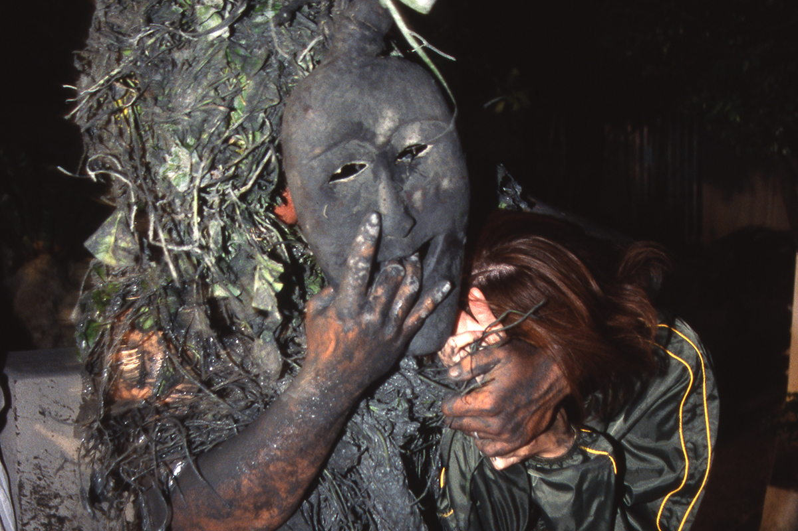
Самый известный обряд называется «Паанту». Божества в масках, обмазанные с головы до ног грязью из священного колодца «Нмаригаа», обходят деревню и желают жителям целый год без болезней.
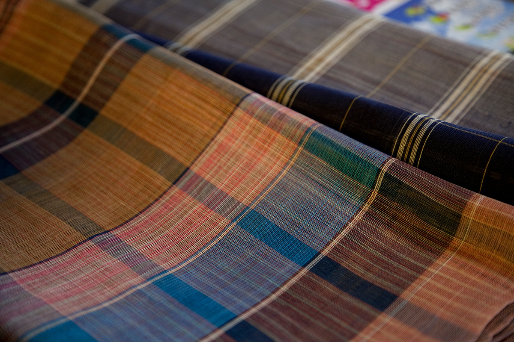
На острове ткут и «мияко-дзёфу», лучшую в Японии ткань из рами. Волокна этого растения из семейства крапивных расщепляют ногтем на нити тоньше волоса и красят рюкюским индиго. Говорят, что это самая трудоёмкая ткань такого рода в мире, а технология её изготовления охраняется государством как важное нематериальное культурное наследие. Кроме ткани, Мияко славится лапшой мияко-соба, говядиной мияко-гю и манго.
Остров Мияко
- Адрес
- префектура Окинава, город Мияко
- Как добраться
- самолётом из аэропорта Ханэда до аэропорта Мияко около 3 часов, из Нахи около 50 минут, из аэропорта Кансай около 2 часов 30 минут
- Телефон
- +81 980-79-6611 (туристическая ассоциация Мияко)
По острову ездят на автобусе, такси, арендованной машине, мотороллере или велосипеде.
Пляжи
Четыре места на разные случаи
На Мияко и соседних Ирабу, Курима и Икэма, куда можно доехать по мостам, около двадцати пляжей. Пляжи здесь в основном небольшие, но все разные, поэтому за поездку стоит объехать несколько. На некоторых, особенно на малоизвестных, нет ни туалета, ни душа: это лучше выяснить заранее.
Посмотреть: мыс Хигаси-Хэннадзаки
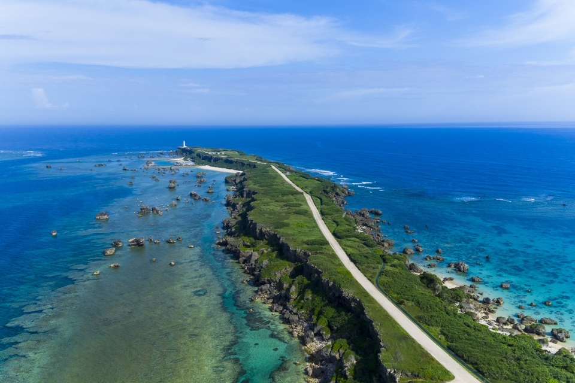
Мыс Хигаси-Хэннадзаки охраняется государством как живописное место. На него можно смотреть сверху, а можно дойти пешком до маяка на самом краю. Внутрь маяка пускают за 200 иен (цена 2018 года), и вид оттуда великолепный.
Мыс Хигаси-Хэннадзаки
- Адрес
- префектура Окинава, Мияко, Гусукубэ-Бора, 1221-14 (маяк)
- Как добраться
- около 40 минут на машине от аэропорта Мияко
Проехать: мост Икэма
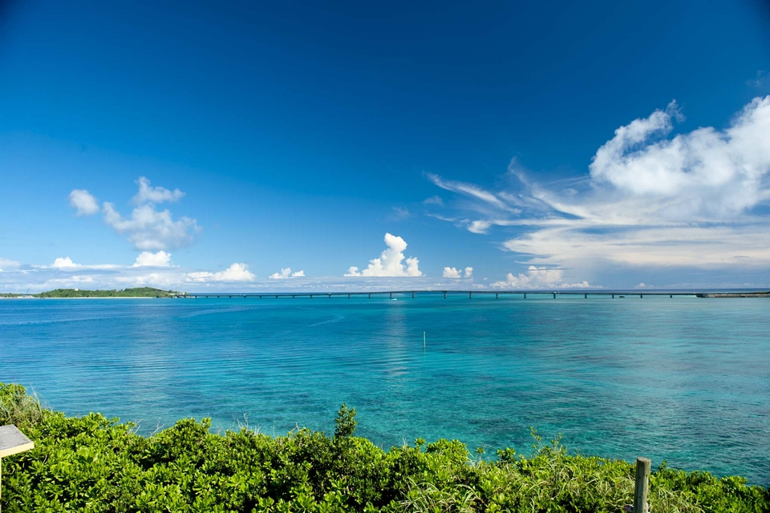
Мост Икэма, открытый в 1992 году, соединяет Мияко с маленьким островом Икэма. С самого моста и с берегов рядом видно, как синий цвет моря переходит из оттенка в оттенок. Чтобы снять мост на фоне моря, лучше подняться на смотровую площадку мыса Ниси-Хэннадзаки.
Мост Икэма
- Адрес
- префектура Окинава, север острова Мияко
- Как добраться
- около 30 минут на машине от аэропорта Мияко
Побродить по мелководью: пляж 17END
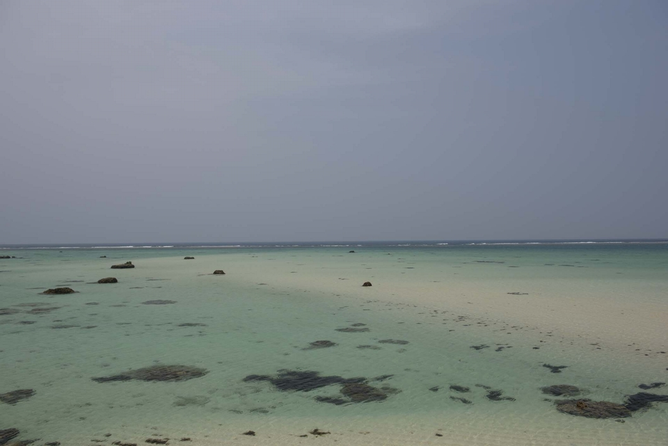
Большую часть острова Симодзи, соседа Ирабу, занимает аэропорт, и в 2019 году здесь открылся пассажирский терминал. Пляж 17END («севентин энд») лежит у конца взлётной полосы: спокойное мелководье тянется далеко от берега, по нему разбросаны камешки, а прозрачнее воды на Мияко, пожалуй, не найти.
Пляж 17END
- Адрес
- префектура Окинава, Мияко, Ирабу-Савада
- Как добраться
- около 30 минут от аэропорта Мияко
Отдохнуть в городе: пляж Пайнагама
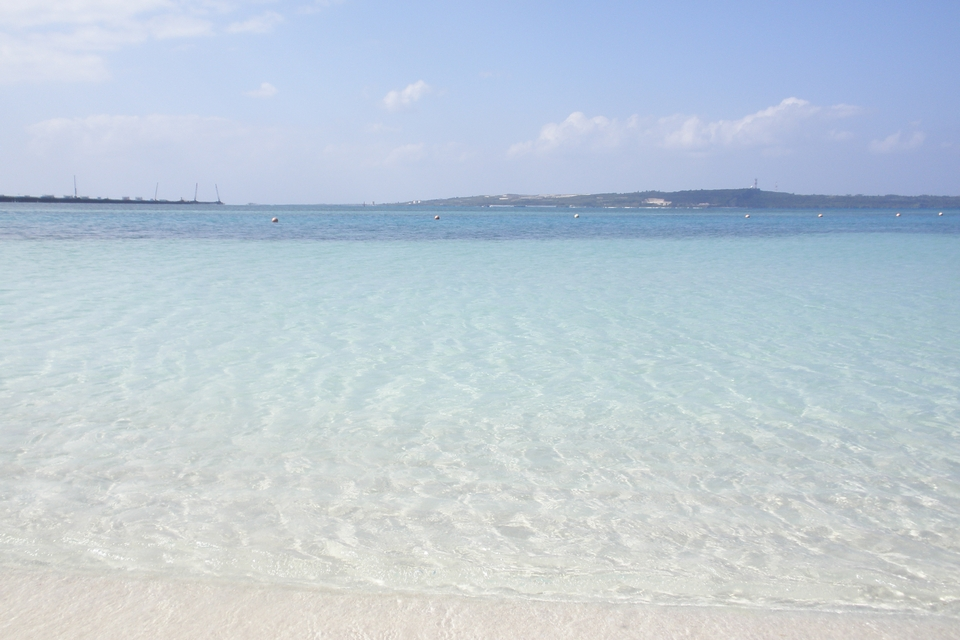
Пайнагама ближе всех к городским кварталам, вокруг много круглосуточных магазинов и кафе, поэтому сюда удобно зайти посреди прогулки. Есть беседки с тенью, пляж доступен для людей на колясках. И закаты здесь красивые.
Пляж Пайнагама
- Адрес
- префектура Окинава, Мияко, Хирара, Симодзато
- Как добраться
- около 10 минут на машине от аэропорта Мияко
Взгляд
Мияко глазами фотографа
Один японский фотограф, который снимает и на краю света, и в больших городах, ездит на Мияко больше десяти лет. Впервые он попал сюда в двадцать с небольшим, когда путешествовал по островам Окинавы и Кагосимы. Его поразила тишина, совсем не такая, как на острове Окинава, и Мияко показался ему странным, загадочным местом.
С тех пор многое изменилось. На Ирабу провели мост, в городе расширяют дороги, гостиниц и магазинов становится всё больше. Одно время шла настоящая строительная лихорадка: приезжало много рабочих с других островов, и аренда квартир сильно подорожала. В 2020 году пандемия этот бум почти остановила, и на остров вернулась прежняя тишина. Фотограф понимает, что это ненадолго, туристы и круизные лайнеры вернутся. Но для него Мияко так и остаётся тем же странно тихим островом, что и десять лет назад.
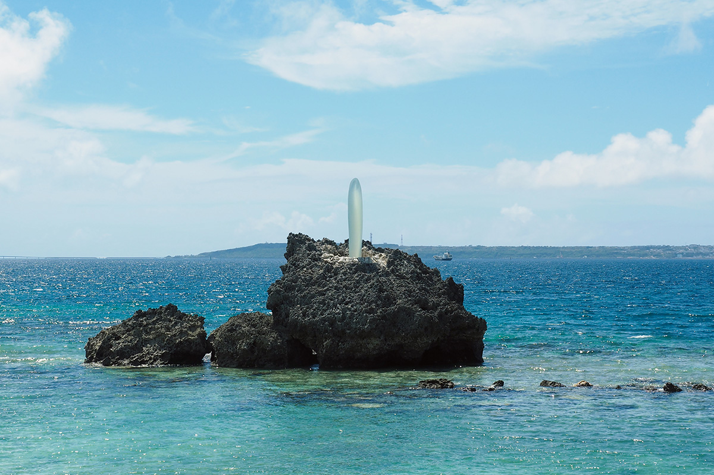
Пляж Маэхама и рынок «Сима-но эки»
Любимое место фотографа у моря это пляж Маэхама. Пляж хорошо известный, но здесь всегда спокойно: прямо напротив остров Курима, слева мост Курима. Ближе к лету молодёжь прыгает в воду с причала, а сам он каждый день медленно гуляет босиком по песку.
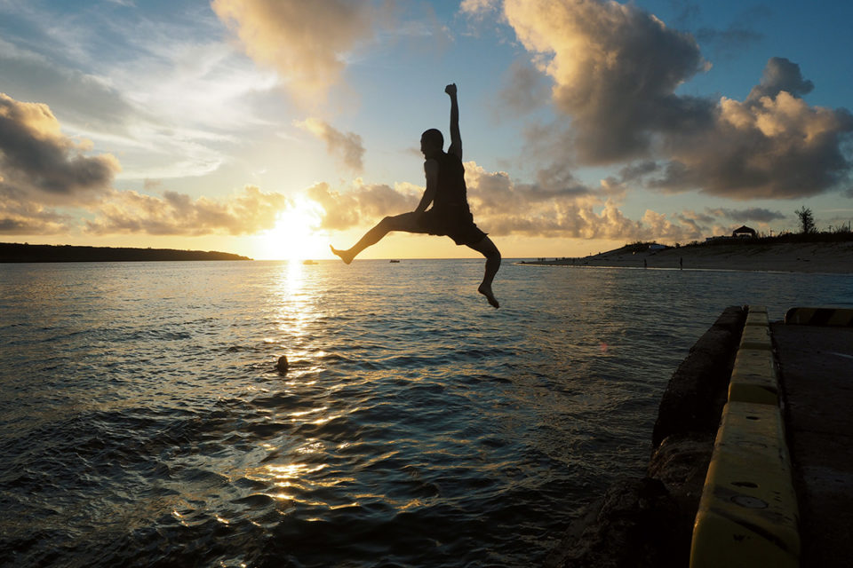
Сувениры он советует покупать на рынке «Сима-но эки», «островной станции» вроде японских придорожных станций. Сюда свозят свежие овощи и фрукты с острова, сладости, местное спиртное. Здесь же пекут хлеб и подают мияко-соба, так что можно заодно пообедать.
Если идёт дождь
В дождливый день можно пойти в «Пани-пани синема», самый южный кинотеатр Японии. Это маленький зал в городе, и в него вложена мечта владельца вернуть кино на остров. Фотограф признаётся, что именно здесь, с карамельным попкорном, впервые распробовал голливудские блокбастеры вроде «Звёздных войн» и «Мстителей», которые раньше почти не смотрел, а потом взял диски напрокат и пересмотрел всё подряд.
А можно не делать ничего и просто слушать дождь. Когда он кончается и выглядывает солнце, становится немного радостнее. По словам фотографа, наслаждаться самим временем, проведённым на месте, и есть лучший способ жить на южном острове.
Ночь
Долгий вечер на улице Нэнкин-дори
Даже по меркам Окинавы Мияко славится своей культурой застолья, в том числе ритуалом «отори». Местные собираются на улице баров Нэнкин-дори, «улице пенсий», ещё засветло, и ночь здесь длинная. Нашими проводниками стала супружеская пара, которая давно и часто ездит на остров.
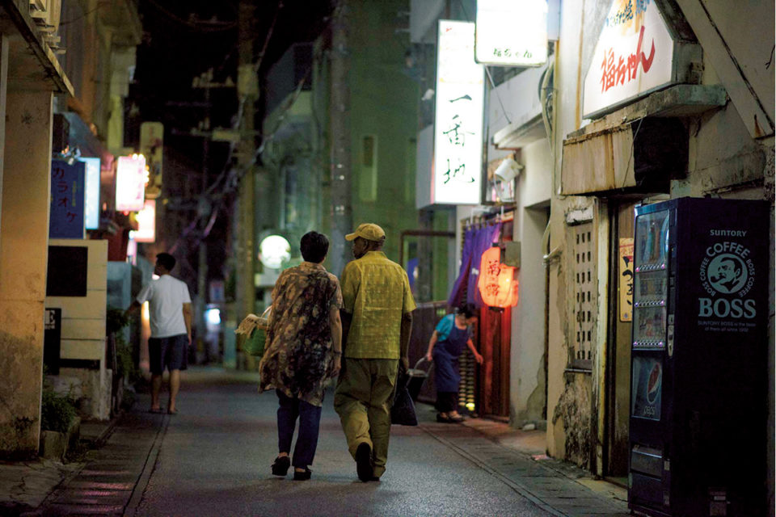
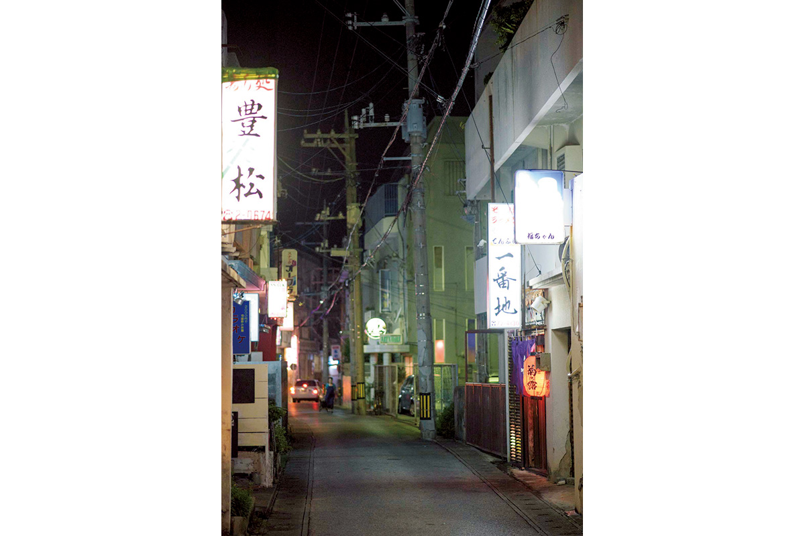
«Такэноко»: домашняя кухня Мияко
Одно из любимых мест пары это идзакая «Такэноко». Она стоит в стороне от оживлённой улицы, и случайный турист сам её не найдёт. Про «Такэноко» супругам рассказал таксист, когда они спросили, где вкусно поесть.
«Место оказалось настолько местным, что мы не сразу решились открыть дверь. Но хозяйки так интересно рассказывали, что на следующий день мы пришли снова. Потом они водили нас по своим любимым местам, знакомили с завсегдатаями, и теперь мы друзья»
путешественница, которая много лет ездит на Мияко
Так, от одного знакомства к другому, у пары на острове появилось множество любимых людей и мест. Ради этого и стоит гулять на Мияко ночью.
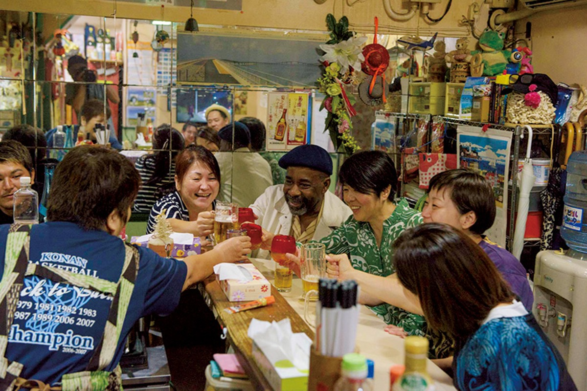
Сюда ходят в основном местные. Система простая: в 2020 году за 3000 иен можно было есть и пить сколько угодно, а блюда хозяйки выбирают сами. Это домашняя кухня Мияко, приготовленная без спешки, а беседы с хозяйкой и постоянными гостями здесь не меньшее удовольствие, чем еда.
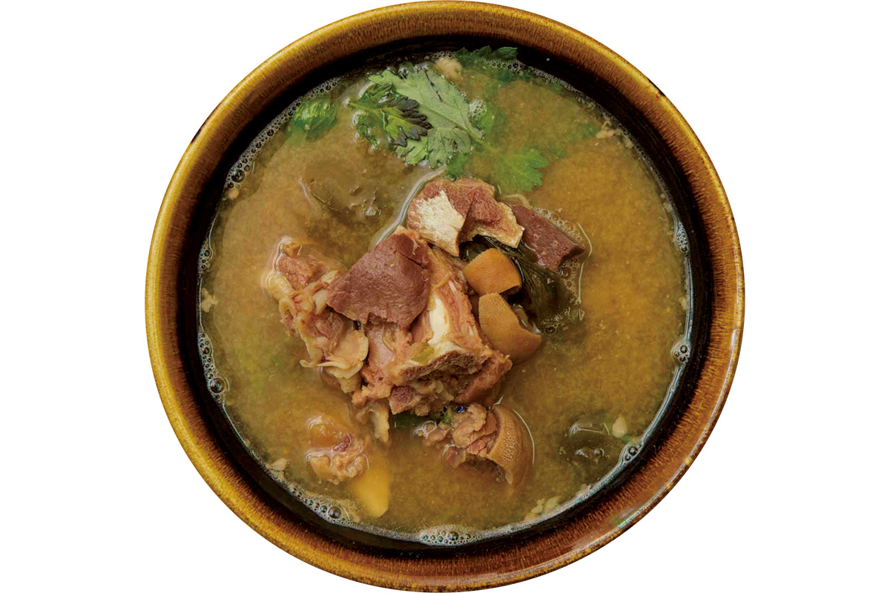
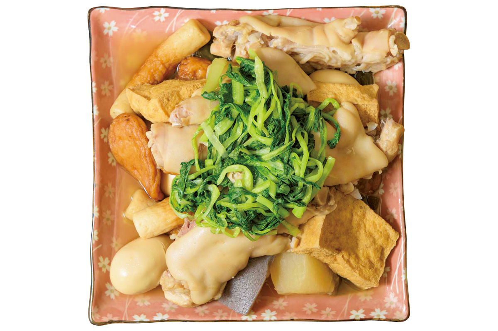
Идзакая «Такэноко»
- Адрес
- префектура Окинава, Мияко, Хирара, Нисидзато, 36-1
- Часы работы
- 18:00 до поздней ночи
- Выходные
- воскресенье
- Телефон
- не указан
«Бар Токио»: «Токио без паспорта»
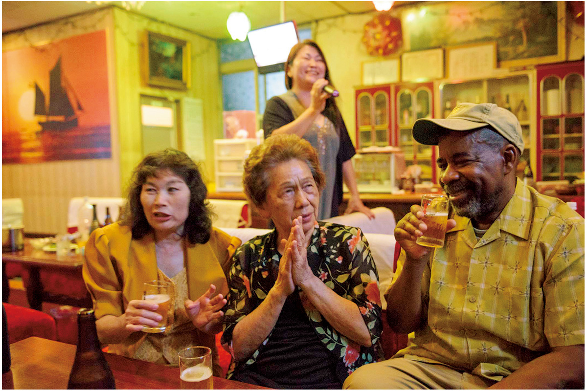
«Бар Токио» паре посоветовала знакомая. Его открыли ещё во время американской оккупации Окинавы, и в название вложен смысл «Токио, куда не нужен паспорт». Внутри сохранилась атмосфера старой Японии середины прошлого века, и послушать рассказы хозяйки здесь большая удача.
«Бар Токио»
- Адрес
- префектура Окинава, Мияко, Хирара, Симодзато, 13
- Телефон
- +81 980-72-0574
- Часы работы
- 20:00–2:00
- Выходные
- без выходных
Стейк в конце ночи
После выпивки в Японии обычно доедают рамэном, а на Окинаве стейком, и этот обычай, говорят, пошёл именно с Мияко. Стейк подают многие ночные идзакая, но в «Леоне», единственном на острове круглосуточном кафе, его можно заказать в любое время, не глядя на часы. И кто знает, может, после стейка тяжести меньше, чем после лапши.
Фото: Цунэтака Симабукуро.